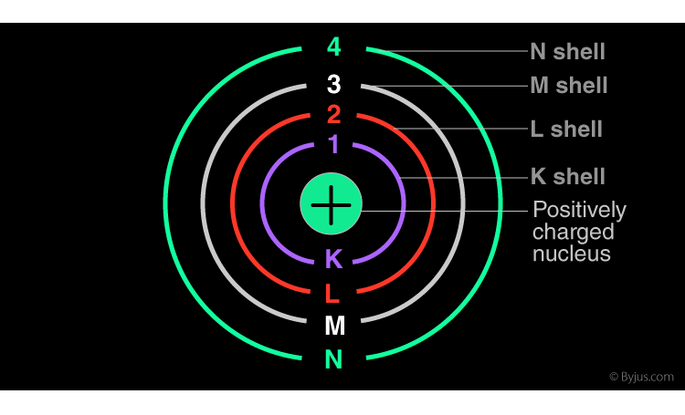
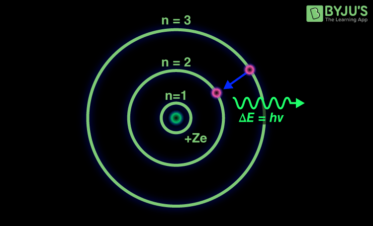
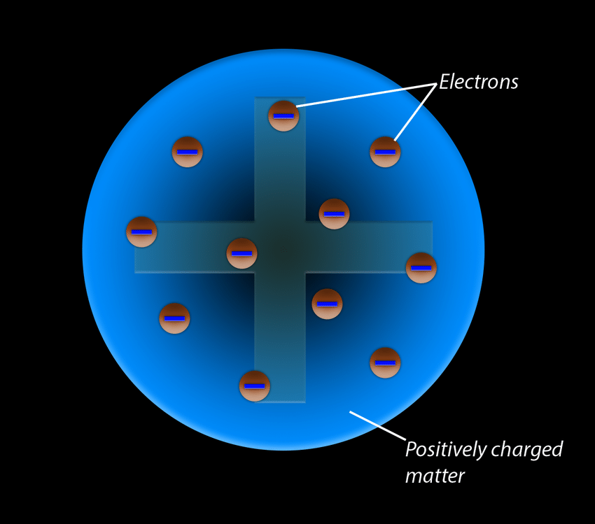

The Bohr model, proposed by Niels Bohr in 1913, is a fundamental concept in atomic physics that describes the structure of the hydrogen atom and other atoms with one electron. It successfully explained certain features of atomic spectra that earlier models couldn’t.
\(\Delta E = E_{final} - E_{initial} = hv\)
\(L = n\hbar = n(\frac{h}{2\pi})\) where n is a positive integer.
The energy of an electron in the nth orbit of a hydrogen atom is given by:
\(E_n = -13.6 \frac{eV}{n^2}\)
This equation shows that energy levels are negative (bound states), and as n increases, the energy becomes less negative, approaching zero.
When an electron moves from a higher energy level (n2) to a lower one (n1), a photon is emitted with energy:
\(hv = E_{n_2} - E_{n_1}\)
This explains the discrete lines in the hydrogen spectrum.
Despite its limitations, the Bohr model laid the foundation for quantum theory and was a critical step in the development of modern atomic physics.
Before Bohr, Ernest Rutherford proposed a model of the atom in 1911 based on his famous gold foil experiment. In this model, he suggested that:
Rutherford's model successfully explained the existence of the nucleus and the scattering of alpha particles, but it had limitations. According to classical physics, revolving electrons should emit electromagnetic radiation, lose energy, and spiral into the nucleus—yet atoms are stable.
This limitation led Niels Bohr to modify Rutherford's model and introduce quantum ideas, which formed the basis of the Bohr Model.
The Plum Pudding Model was proposed by J.J. Thomson in 1904 after his discovery of the electron. It was one of the earliest models to describe the internal structure of atoms.
According to this model, the atom is a uniform sphere of positive charge with negatively charged electrons embedded throughout it—like plums in a pudding (or raisins in a cake). The positive charge was thought to balance out the negative electrons, making the atom neutral overall.
While the Plum Pudding Model successfully explained electrical neutrality and the existence of electrons, it could not explain the results of Rutherford’s gold foil experiment, which showed that positive charge is concentrated in a small nucleus. As a result, the model was eventually replaced by the Rutherford and Bohr models.
| Feature | Plum Pudding Model | Rutherford Model | Bohr Model |
|---|---|---|---|
| Proposed By | J.J. Thomson | Ernest Rutherford | Niels Bohr |
| Year | 1904 | 1911 | 1913 |
| Structure of Atom | Electrons embedded in a positively charged sphere | Dense central nucleus with electrons around it | Electrons orbit the nucleus in fixed energy levels |
| Position of Electrons | Scattered within the atom | Outside the nucleus, but not in defined paths | Fixed circular orbits (shells) |
| Position of Positive Charge | Spread throughout the atom | Concentrated in the nucleus | In the nucleus |
| Success/Failure | Couldn’t explain scattering experiment | Explained nucleus, but not electron stability | Explained atomic stability and spectral lines |
Written by Thenura Dilruk